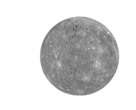

| PLANETA | DESCRIÇÃO |
|---|---|
|
 |
Mercúrio é o planeta mais próximo do Sol e também o menor do Sistema Solar. Possui uma superfície rochosa cheia de crateras, parecida com a da Lua. Não tem atmosfera significativa, então as temperaturas variam muito entre o dia e a noite. Um ano em Mercúrio dura apenas 88 dias terrestres. Por causa da sua órbita e rotação, o dia lá é mais longo que o ano! |